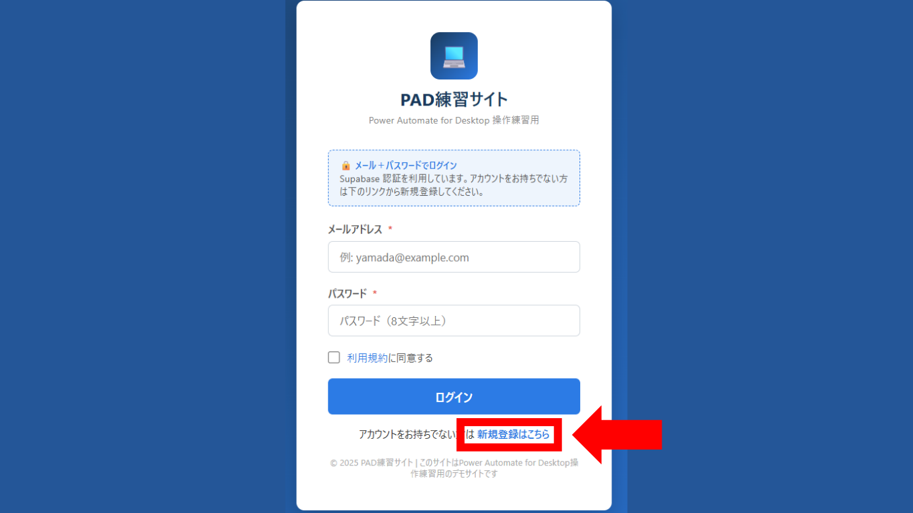

第0回 キックオフ 〜PADで何が変わるのか〜
本研修のゴール（プロフィールシート一括出力フロー）の完成イメージを動画レベルで焼き付け、
最終演習で何を作るかをイメージしてから第1回に進むための回です。あわせて、PAD のインストールとサインインまで完了させます。
到達目標
- 本研修のゴール（最終演習フロー）の完成イメージを動画レベルで把握している
- ホーム（PADとは／研修ロードマップ）を見て、全8回で何を学ぶかを理解している
- Power Automate for Desktop をインストールし、Microsoft 職場・学校アカウントでサインインできている
- デモサイトの自分のアカウントが作成済みである（別資料の手順書を参照）
解説
0-A. PAD（Power Automate for Desktop）とは
PAD は Microsoft が提供する RPA（業務自動化）ツールです。Windows 11 に標準搭載されており、追加費用なしで全社員が使えます。
「Excel を開いて、セルに値を書き込んで、保存する」「ブラウザを開いて、ログインして、検索結果をスクレイピングする」といった「決まった手順の繰り返し作業」を、人間の代わりに PAD が実行してくれます。
0-B. 完成動画 〜プロフィールシート一括出力フロー〜
第7回（総合演習）で受講者全員が組み上げるフローの完成動画です。
ブラウザ自動操作 → スタッフ情報を取得 → Excel に出力までを一貫して行います。
0-C. 研修ロードマップ（全8回）
サイドバー上部の「🏠 ホーム（PADとは／ロードマップ）」を開くと、全8回のロードマップが表示されます。各回の四角をクリックすると対応する lesson ページに遷移できます。
- 第0回 キックオフ（今ここ）
- 第1回 環境セットアップ（PAD導入 / WebDriver）
- 第2回 変数を完全理解
- 第3回 Excel自動化
- 第4回 ブラウザ自動化①（ログイン / クリック）
- 第5回 ブラウザ自動化②（スクレイピング / URL直）
- 第6回 制御構造（ループ / 分岐 / 例外 / サブフロー）
- 第7回 総合演習（プロフィール一括出力）
PAD のインストール〜サインイン
0-D. Power Automate for Desktop を起動する
Windows 11 には Power Automate for Desktop が標準搭載されています。
まずはスタートメニューから起動して、アプリケーションが存在するかを確認しましょう。
- スタートメニュー（左下の Windows ロゴ）をクリックする
- 検索バーに「Power Automate」と入力して検索する
- 「Power Automate」（Microsoft Corporation 製）が表示されたら、それをクリックして起動する

Microsoft Store を開き「Power Automate」で検索 →「Power Automate」（Microsoft Corporation 製）の「インストール」をクリックしてください。
0-E. Microsoft 職場・学校アカウントでサインインする
PAD 起動後、Microsoft アカウントでのサインインが求められます。個人の Microsoft アカウントではなく、会社のメールアドレス（職場・学校アカウント）でサインインしてください。
- サインイン画面で会社のメールアドレスを入力
- パスワードを入力してサインインを完了する
- 初回起動時は使用許諾やテレメトリの確認画面が出ることがある（既定のままで OK）
0-F. デモサイトのアカウント作成（別資料）
本研修で進捗バッジや事例集投稿に使う デモサイトのアカウント作成手順は、研修事務局から配布される PowerPoint 資料（成果物_アカウント作成手順.pptx）を参照してください。
研修当日までに、配布された手順書に沿って signup → 認証メール承認 → ログイン確認 までを済ませておいてください。

ハンズオン課題
- 課題1：PAD をスタートメニューから起動し、Microsoft 職場アカウントでサインインを完了する
- 課題2：配布された PowerPoint 手順書を見ながら、デモサイトのアカウントを作成し、index.html からログインしてホームのロードマップを表示する
よくある詰まりと FAQ
成果物_アカウント作成手順.pptx を参照してください。配布されていない場合は TA に問い合わせてください。